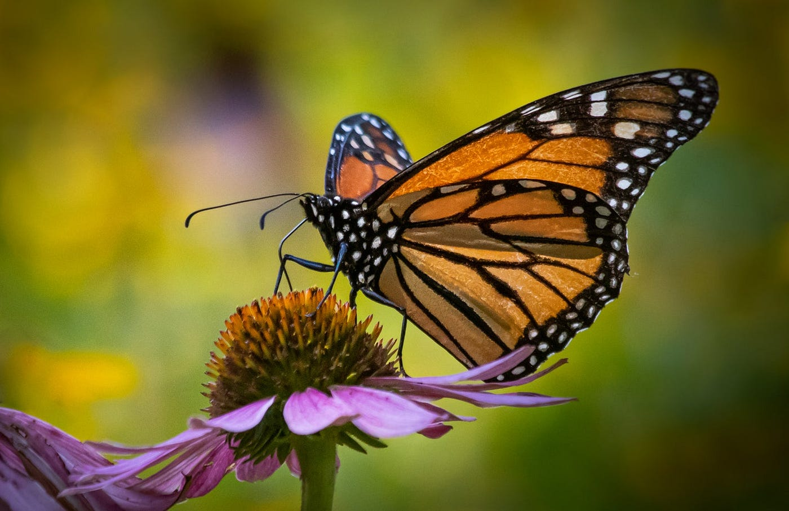
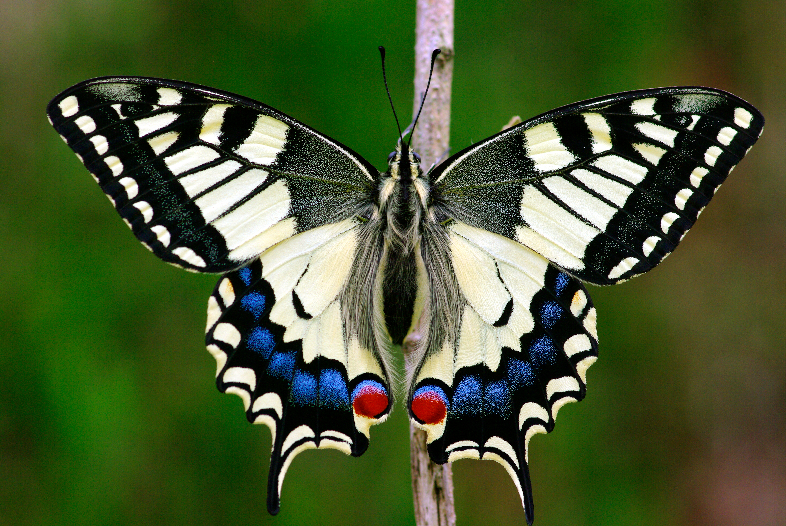
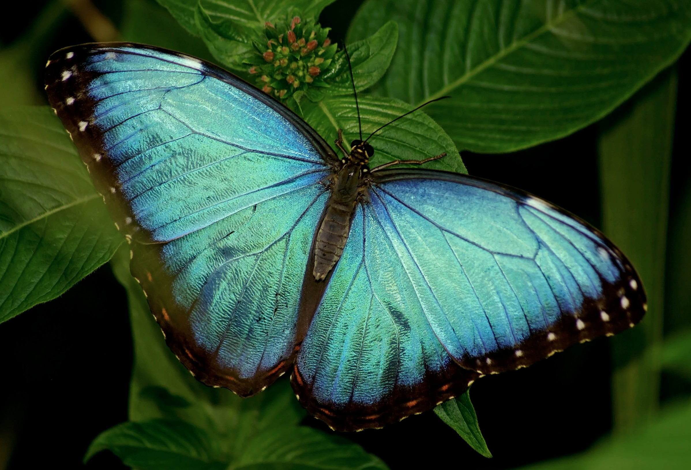

Butterflies are beautiful insects that are found all over the world. They are known for their colorful wings and graceful flight.
Butterflies play a crucial role in pollination, which helps plants reproduce and maintain biodiversity. They are also indicators of environmental health, as their presence or absence can reflect the condition of an ecosystem.

The monarch butterfly is a well-known species that is found in North America. It is famous for its incredible migration journey, which can span thousands of miles.

Swallowtail butterflies are a family of butterflies that are known for their distinctive tail-like extensions on their wings. They are found in various habitats around the world.

The blue morpho butterfly is a species that is found in Central and South America. It is known for its vibrant blue wings, which are a result of microscopic scales that reflect light.